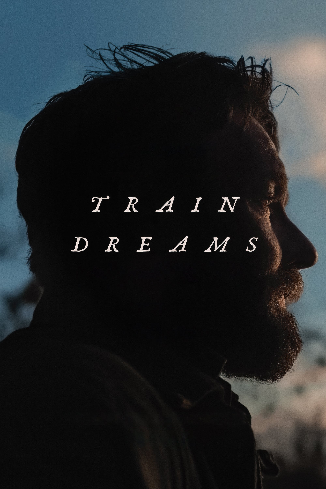
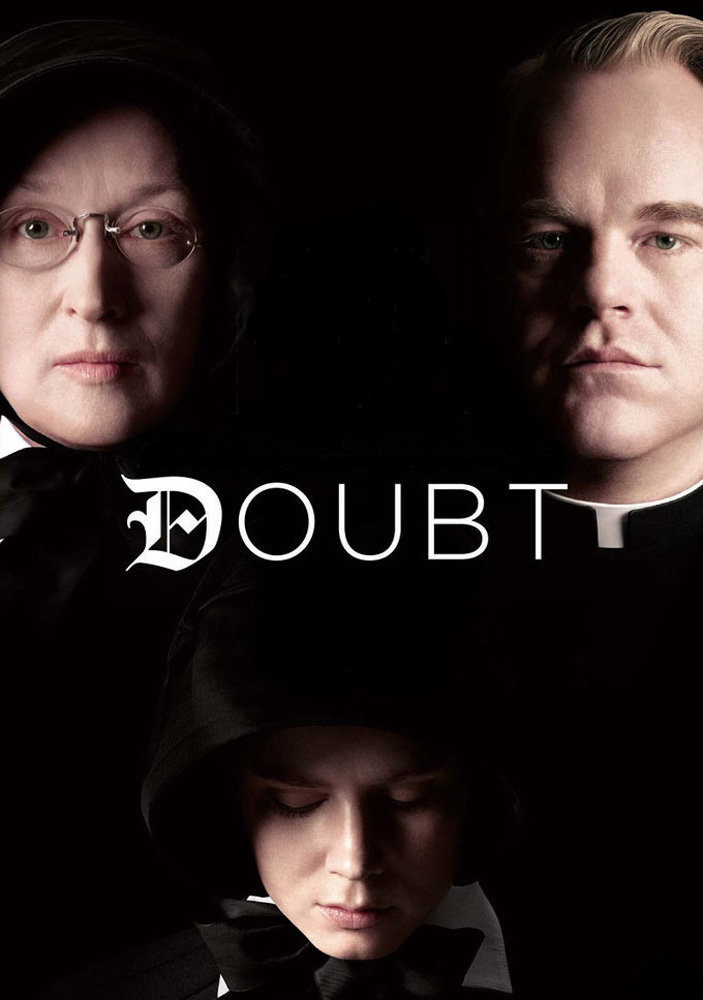

Train Dreams
Autora: Luísa Bassi
Nota: ⭐⭐⭐⭐

É um filme muito triste. É como se o personagem principal carregasse aquela sensação de coração pesado pelo resto da
vida dele.
Ele sabia como o coração dele poderia ser leve, mas a vida não devolveu a ele razões para ser assim de novo.
Que bom que ele consegue olhar para algum lugar e reconhecer que foi feliz, entretanto ele sabe que esse tempo nunca
mais vai voltar.
Fotografia sensacional e que coisa linda que é envelhecer, significa que em algum momento tu viveu algo e isso ficou
marcado em ti pra sempre.
Gostei muito de ver a passagem do tempo através do rosto do Robert.
Acessar mais informações sobre o filme
Michael
Autora: Luísa Bassi
Nota: ⭐⭐⭐⭐

NOSSA! Amei esse filme! A atuação, dança, figurino e a escolha das músicas são impecáveis.
O ator principal se dedicou horrores e valeu muito muito muito a pena! Sério! Fiquei tão feliz quando ele finalmente
conseguiu fazer o projeto solo dele, e mais ainda quando eu percebi o quão querido e amado ele era. Conhecia parte da
história dele, entretanto não sabia o quão manipulador o pai dele era. Ele merece todo o reconhecimento possível e imaginável.
Viver isso no cinema faz tudo ser melhor.
Acessar mais informações sobre o filme
Doubt
Autora: Luísa Bassi
Nota: ⭐⭐⭐⭐ 1/2

Que filme incrível! Li a sinopse do filme e pensei comigo mesma: 'Por que não?'. Desde o momento em que comecei a assistir,
não consegui parar. A narrativa era tão interessante e intensa que fiquei verdadeiramente imersa, com atuações tão fortes do elenco.
Claro, sei que vou repetir o óbvio, mas não me importo — cada um dos atores neste filme tocou meu coração, assim como com a narrativa
deles. A cena entre Meryl e Viola foi inesquecível para mim; tive que pausar para ter certeza de que estava entendendo a situação com
precisão. Não consigo parar de pensar nisso.
Acessar mais informações sobre o filme